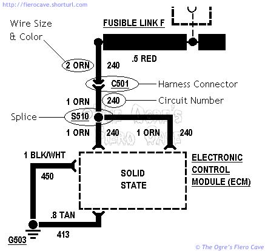
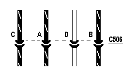
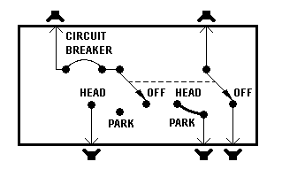

Go Home
Site Map
Go Home
Site Map
Reading GM Wire Diagrams
Warning! Each carmaker uses proprietary drawing symbols. Never assume a symbol GM uses has the same meaning as anyone else's.
Wiring diagrams may contain errors! Those published thru aftermarket books and services commonly develop errors from copying and scanning but even factory books can contain errors. Fine lines and Decimal Points are commonly degraded or even lost during reproduction.
Wiring can vary greatly from one model year to the next! Don't assume diagrams in Haynes, Chilton's, and other books that cover multiple models/years are correct for your car. If you aren't sure of something, use ALLdata or a Helm book for your specific model and year. (Example, Haynes leaves out all info on the DIS motor wiring and Gen 2 HL motors.)
Many of the in objects in GM diagrams are easy to identify symbols. They are either labeled clearly or standard electronic symbols but there are a few things that aren't obvious. We'll look at a few snips of diagrams and explain the various items that are proprietary to GM diagrams. (I'm not covering standard symbols. If you need standard symbols visit a public library or buy a book.)

Above we see a simple diagram of some power and ground lines for the ECM. (This is an example only! It is not complete or accurate to any specific vehicle.) I would hope I don't have to explain what a splice is... G503 is one of many grounds screwed to the frame or engine block.
How to I tell were G101, C203, S401, etc, is?
Break it down...
Letter tells:
G = Ground
C = Connection
S = Splice
Number tells which Zone is:
Zone - Where
100 - Front Compartment, headlight, etc
200 - Cabin, Main
300 - Cabin, "cross connect," IE doors options.
400 - Rear lights and Cruise Control servo
500 - Engine/trans area
Wire
Wire size in all GM cars and drawings since the early 80's is metric, and is defined as the cross sectional area of a conductor in square millimeters. So in the circled example above, the size of that section of orange wire is 2 sq mm.
Be careful reading wire sizes! Some numbers are tenths of a sq mm but poor reproduction of many diagrams may drop the decimal points. For example many diagrams show the size of Fusible Link F as 5 (five) sq mm instead of its correct size of .5 (point 5) sq mm. The giveaway here is that a fuse link is always smaller than the wire connected to it. In other circuits, like the ECM grounds above, you won't get that clue.
Single color wire is easy. When you run into a color like TAN/BLK, the first part is the wire color and the second part is the stripe color.
The circuit number will follow a line as it moves around the car, even if the wire size or colors change. (Notice above how each leg of the ECM power wire has the number 240 next to it.)
This Metric to AWG wire chart may be handy for some people. It lists common metric sizes and the correct AWG wire to use with it.
Assemblies
Boxes/shapes drawn in dotted lines are usually assemblies. These parts were all installed as a single unit into the car during production. The ECM, ignition module, and dash pod are all examples of assemblies. GM will often show what is happening inside the assembly but it isn't really meant to give all the details.
An assembly may or may not have serviceable parts inside it. The dash has various parts that can be fixed individually but the ECM or ignition module is replaced as a whole unit. (Ignoring the PROM just now...)
Depending on the drawing, you might see electronic symbols one time and the simple "Solid State" designation another. The symbols in an assembly often reflect a function and not real parts. The ECM will typically show switches that are really transistors, etc. In the example above, we don't care what is happening in the ECM, just how power gets to it.
Connectors
Our example harness connector above is a very simple single terminal job. Here's an example of a multi terminal connector...
Notice how the dotted line runs across the terminals of C506. In this case we see all 4 terminals of that connector but in larger circuits the terminals could be spread all over the page or even multiple drawings.
Always keep in mind that the drawing and physical layout of the wires are almost never the same. C506 is physically wired ABCD while our drawing example is CADB. This is done to make the drawings easier to follow.
On really big connectors, like C500, you'll find terminals labeled with a letter and number, like E3. This designates the row and column the terminal occupies in the connector shell.
Gang Switch
Gang switches control multiple circuits simultaneously. In electronics terms they are "Multi Pole, Multi Throw" switches.
Here we see the symbol for a typical headlight switch. Notice the dashed line between the two arrows. That line indicates that the contacts move together. The left side of the switch controls the headlamps and the right side controls the parking lamps.
Here's the rub... This symbol can represent any number of physical switches. The Fiero style Rocker Switch, Pull Knobs, Rotary Switches and even Push Buttons can be used to build a gang switch that would provide the function indicated by the symbol shown here.
The Fiero AC push buttons are a perfect example; they are one of the most complicated gang switches I can think of. This thing has a batch of multi pole push button switches wired up on a printed circuit. In other cars the AC controls are often a rotary knob. In the wiring diagram they can use the same symbol.